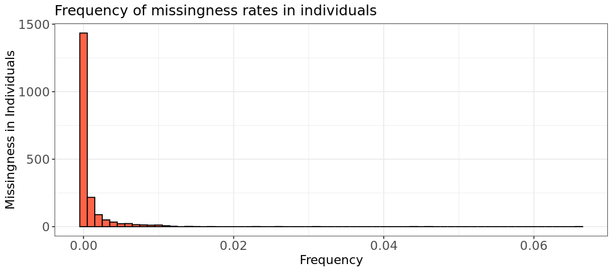
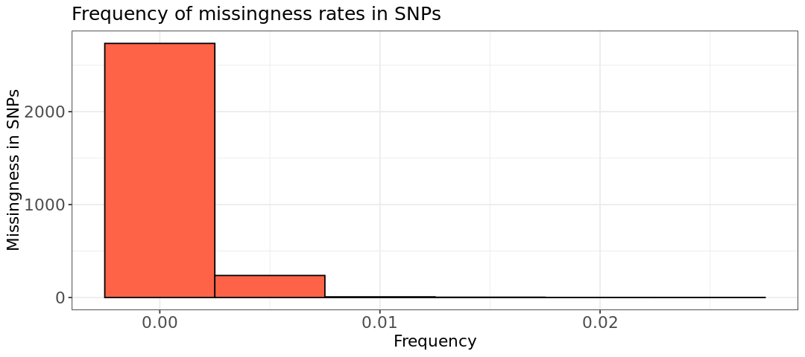
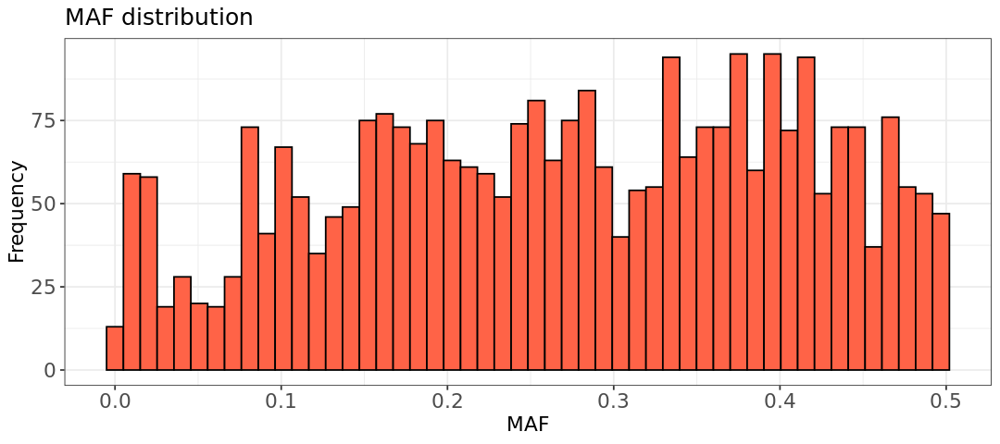
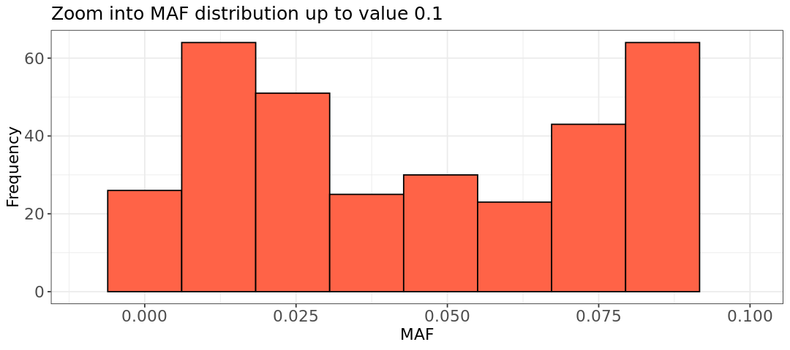
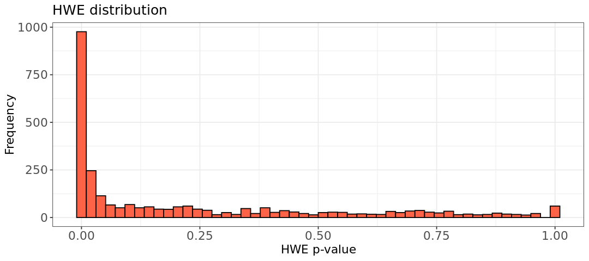
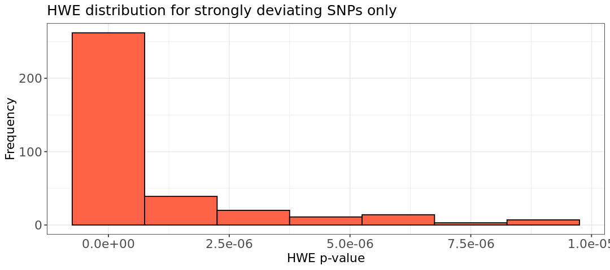
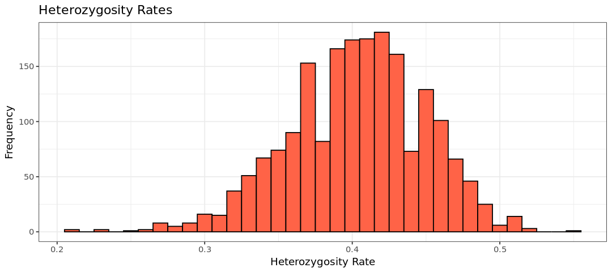

ln -sf ../../Data
ln -sf ../ResultsMice data exercise
Perform the following filtering analysis:
- 1. Missingness and filtering, both at the variant- and individual-level.
- 2. Minor Allele Frequency filtering.
- 3. Hardy-Weinberg Equilibrium.
- 4. Heterozygosity rate.
 Switch to the Bash kernel.
Switch to the Bash kernel.
1. Filtering excessive missing values.
First of all, we begin by producing the sample-wise and variant-wise missing reports in the format .imiss and .lmiss. Note that sex will not be considered at all by PLINK as mentioned in the warning.
plink --bfile Data/mice --missing --out Results/GWAS3/mice --silentWarning: Ignoring phenotypes of missing-sex samples. If you don't want those
phenotypes to be ignored, use the --allow-no-sex flag. Switch to the R-GWAS kernel.
Switch to the R-GWAS kernel.
Now we look at the histograms. The only thing needed to change in the code, compared to the tutorial, is the name of the two missingness reports.
library(ggplot2)
options(repr.plot.width = 9, repr.plot.height = 4)
# Read data into R
indmiss <- read.table(file="Results/GWAS3/mice.imiss", header=TRUE)
snpmiss <- read.table(file="Results/GWAS3/mice.lmiss", header=TRUE)
#imiss histogram
hist.imiss <- ggplot(indmiss, aes(x=indmiss[,6])) +
geom_histogram(binwidth = 0.001, col = "black", fill="tomato") +
labs(title = "Frequency of missingness rates in individuals") +
xlab("Frequency") +
ylab("Missingness in Individuals") +
theme_bw()+
theme(axis.title=element_text(size=13), axis.text=element_text(size=13), plot.title=element_text(size=15))
#lmiss histogram
hist.lmiss <- ggplot(snpmiss, aes(x=snpmiss[,5])) +
geom_histogram(binwidth = 0.005, col = "black", fill="tomato") +
labs(title = "Frequency of missingness rates in SNPs") +
xlab("Frequency") +
ylab("Missingness in SNPs") +
theme_bw()+
theme(axis.title=element_text(size=13), axis.text=element_text(size=13), plot.title=element_text(size=15))
#show histograms
show(hist.imiss)
show(hist.lmiss)Warning message:
“package ‘ggplot2’ was built under R version 4.2.3”

The histograms do not show any high missingness for the variants (second plot), while there are a few individuals that we should filter out. Below, we filter only individuals with missingness above 2%, without choosing any variant filter. The new bed, bim, fam files have the prefix mice_miss
plink --bfile Data/mice --mind .02 --make-bed --out Results/GWAS3/mice_miss --silentWarning: Ignoring phenotypes of missing-sex samples. If you don't want those
phenotypes to be ignored, use the --allow-no-sex flag.2. Minimum Allele Frequency.
Let’s calculate the MAF values using --freq:
# Generate a plot of the MAF distribution.
plink --bfile Results/GWAS3/mice_miss --freq --out Results/GWAS3/mice_miss --silent Switch to the R-GWAS kernel.
Switch to the R-GWAS kernel.
Let’s plot the MAF histogram using R. The second plot, is a zoom-in version with MAF up to 0.1 to observe the low MAF values.
library(ggplot2)
options(repr.plot.width = 9, repr.plot.height = 4)
# Read data into R
maf_freq <- read.table("Results/GWAS3/mice_miss.frq", header =TRUE, as.is=T)
# maf_freq histogram
hist.maf <- ggplot(maf_freq, aes(x=maf_freq[,5])) +
geom_histogram(col = "black", fill="tomato", bins=50) +
labs(title = "MAF distribution") +
xlab("MAF") +
ylab("Frequency") +
theme_bw()+
theme(axis.title=element_text(size=13), axis.text=element_text(size=13), plot.title=element_text(size=15))
# zoom-in into X-axis
hist.maf.zoom <- ggplot(maf_freq, aes(x=maf_freq[,5])) +
geom_histogram(col = "black", fill="tomato", bins = 10) +
labs(title = "Zoom into MAF distribution up to value 0.1") +
xlab("MAF") +
ylab("Frequency") +
xlim(-.01, 0.1) +
theme_bw()+
theme(axis.title=element_text(size=13), axis.text=element_text(size=13), plot.title=element_text(size=15))
show(hist.maf)
show(hist.maf.zoom)Warning message: “package ‘ggplot2’ was built under R version 4.2.3” Warning message: “Removed 2611 rows containing non-finite outside the scale range (`stat_bin()`).” Warning message: “Removed 2 rows containing missing values or values outside the scale range (`geom_bar()`).”


There are two minor peaks in the histograms above, one at 0.05 and 0.1. Choosing 0.1 would remove over a hundred extra SNPs, while 0.05 should remove around less than 200. We can for example choose 0.05, but 0.1 is acceptable as well as it is another threshold often applied in literature.
# Remove SNPs with a low MAF frequency.
plink --bfile Results/GWAS3/mice_miss --maf 0.05 --make-bed --out Results/GWAS3/mice_miss_maf --silent3. Hardy Weinberg Equilibrium.
Here we need again to apply the option hardy to calculate observed and expected heterozigous frequencies and p-values for the binomial test. Note how column TEST considers all individuals ( ALL(NP) stands for ALL Not Pruned).
plink --bfile Results/GWAS3/mice_miss_maf --hardy --out Results/GWAS3/mice_miss_maf --silent
awk '{ if ($9 <0.00001) print $0 }' Results/GWAS3/mice_miss_maf.hwe > Results/GWAS3/mice_miss_maf.deviating.hwehead Results/GWAS3/mice_miss_maf.hwe CHR SNP TEST A1 A2 GENO O(HET) E(HET) P
1 rs3683945 ALL(NP) A G 358/1002/572 0.5186 0.4939 0.03035
1 rs3707673 ALL(NP) G A 359/1003/572 0.5186 0.4939 0.03048
1 rs6269442 ALL(NP) A G 252/887/791 0.4596 0.461 0.8824
1 rs6336442 ALL(NP) A G 358/1003/572 0.5189 0.4939 0.02714
1 rs13475700 ALL(NP) A C 33/442/1458 0.2287 0.2283 1
1 rs3658242 ALL(NP) A T 359/1003/572 0.5186 0.4939 0.03048
1 rs13475701 ALL(NP) C G 33/481/1417 0.2491 0.2432 0.3045
1 rs6198069 ALL(NP) A G 186/802/945 0.4149 0.4229 0.4197
1 rs3659303 ALL(NP) A G 360/1001/571 0.5181 0.494 0.03419wc -l Results/GWAS3/mice_miss_maf.deviating.hwe356 Results/GWAS3/mice_miss_maf.deviating.hweThere are 355 variants to remove with a p-value below 0.00001
 Switch to the R-GWAS kernel.
Switch to the R-GWAS kernel.
Now we create histograms to look at the p-values from the tables above. We do not need to use the case-control renaming and plotting categories.
suppressMessages(suppressWarnings(library(dplyr)))
# Read data into R using dplyr library
hwe <- read.table(file="Results/GWAS3/mice_miss_maf.hwe", header=TRUE)
hwe_zoom <- read.table(file="Results/GWAS3/mice_miss_maf.deviating.hwe", header=FALSE)
colnames(hwe_zoom) <- colnames(hwe)Here, we print the first rows of the two generated tables
head(hwe)
head(hwe_zoom)| CHR | SNP | TEST | A1 | A2 | GENO | O.HET. | E.HET. | P | |
|---|---|---|---|---|---|---|---|---|---|
| <int> | <chr> | <chr> | <chr> | <chr> | <chr> | <dbl> | <dbl> | <dbl> | |
| 1 | 1 | rs3683945 | ALL(NP) | A | G | 358/1002/572 | 0.5186 | 0.4939 | 0.03035 |
| 2 | 1 | rs3707673 | ALL(NP) | G | A | 359/1003/572 | 0.5186 | 0.4939 | 0.03048 |
| 3 | 1 | rs6269442 | ALL(NP) | A | G | 252/887/791 | 0.4596 | 0.4610 | 0.88240 |
| 4 | 1 | rs6336442 | ALL(NP) | A | G | 358/1003/572 | 0.5189 | 0.4939 | 0.02714 |
| 5 | 1 | rs13475700 | ALL(NP) | A | C | 33/442/1458 | 0.2287 | 0.2283 | 1.00000 |
| 6 | 1 | rs3658242 | ALL(NP) | A | T | 359/1003/572 | 0.5186 | 0.4939 | 0.03048 |
| CHR | SNP | TEST | A1 | A2 | GENO | O.HET. | E.HET. | P | |
|---|---|---|---|---|---|---|---|---|---|
| <int> | <chr> | <chr> | <chr> | <chr> | <chr> | <dbl> | <dbl> | <dbl> | |
| 1 | 1 | rs13475729 | ALL(NP) | G | A | 46/339/1549 | 0.1753 | 0.1980 | 3.014e-06 |
| 2 | 1 | rs13475730 | ALL(NP) | G | A | 46/339/1547 | 0.1755 | 0.1982 | 3.079e-06 |
| 3 | 1 | rs3654377 | ALL(NP) | G | A | 46/339/1549 | 0.1753 | 0.1980 | 3.014e-06 |
| 4 | 1 | rs3655978 | ALL(NP) | A | G | 46/339/1545 | 0.1756 | 0.1984 | 3.146e-06 |
| 5 | 1 | rs13475731 | ALL(NP) | A | G | 46/339/1548 | 0.1754 | 0.1981 | 3.046e-06 |
| 6 | 1 | rs3670630 | ALL(NP) | A | C | 46/339/1545 | 0.1756 | 0.1984 | 3.146e-06 |
Now, we can plot the histograms
suppressMessages(suppressWarnings(library(ggplot2)))
options(repr.plot.width = 9, repr.plot.height = 4)
# maf_freq histogram
hist.hwe <- ggplot(hwe, aes(x=hwe[,9])) +
geom_histogram(col = "black", fill="tomato", bins=50) +
labs(title = "HWE distribution") +
xlab("HWE p-value") +
ylab("Frequency") +
theme_bw()+
theme(axis.title=element_text(size=13), axis.text=element_text(size=13), plot.title=element_text(size=15))
# maf_freq histogram
hist.hwe_below_threshold <- ggplot(hwe_zoom, aes(x=hwe_zoom[,9])) +
geom_histogram(binwidth = 0.0000015, col = "black", fill="tomato") +
labs(title = "HWE distribution for strongly deviating SNPs only") +
xlab("HWE p-value") +
ylab("Frequency") +
theme_bw()+
theme(axis.title=element_text(size=13), axis.text=element_text(size=13), plot.title=element_text(size=15))
show(hist.hwe)
show(hist.hwe_below_threshold)


We choose the threshold 1e-5 and create the new filtered data files:
plink --bfile Results/GWAS3/mice_miss_maf --hwe 1e-5 --make-bed --out Results/GWAS3/mice_miss_maf_hwe --silent4. Heterozigosity rate.
Now we look at genotype calls at each individual’s level. First, we create a list of SNPs for which there is lower correlation, so to avoid linkage disequilibrium.
plink --bfile Results/GWAS3/mice_miss_maf_hwe --indep-pairwise 50 5 0.2 --out Results/GWAS3/mice_indepSNP --silentWith this pruned list, we measure the heterozygosity rates of the individuals in the remaining independent SNPs.
plink --bfile Results/GWAS3/mice_miss_maf_hwe \
--extract Results/GWAS3/mice_indepSNP.prune.in \
--het \
--out Results/GWAS3/mice_R_check \
--silentHow does the table with the SNPs look like?
head -5 Results/GWAS3/mice_R_check.het FID IID O(HOM) E(HOM) N(NM) F
A048005080 A048005080 112 109.5 184 0.03357
A048006063 A048006063 111 109.5 184 0.02015
A048006555 A048006555 105 109.5 184 -0.06039
A048007096 A048007096 94 109.5 184 -0.208 Switch to the R-GWAS kernel.
Switch to the R-GWAS kernel.
We are going to calculate by hand the heterozygosity rates so we can plot them (not by default in the table). The formula for the rates is \(N(NM)-O(HOM)/N(NM)\)
library(ggplot2)
options(repr.plot.width = 9, repr.plot.height = 4)
het <- read.table("Results/GWAS3/mice_R_check.het", head=TRUE)
het$HET_RATE = (het$"N.NM." - het$"O.HOM.")/het$"N.NM."
# plink.imiss histogram
hist.het <- ggplot(het, aes(x=HET_RATE)) +
geom_histogram(binwidth = 0.01, col = "black", fill="tomato") +
labs(title = "Heterozygosity Rates") +
xlab("Heterozygosity Rate") +
ylab("Frequency") +
theme_bw()
show(hist.het)Warning message:
“package ‘ggplot2’ was built under R version 4.2.3”

We use the same filter for all individuals as applied to the other dataset (heterozigosity rate 3 standard deviations away from the mean)
suppressMessages(suppressWarnings(library(dplyr)))
het <- read.table("Results/GWAS3/mice_R_check.het", head=TRUE)
het$HET_RATE = (het$"N.NM." - het$"O.HOM.")/het$"N.NM."
het_fail <- subset(het, (het$HET_RATE < mean(het$HET_RATE)-3*sd(het$HET_RATE)) |
(het$HET_RATE > mean(het$HET_RATE)+3*sd(het$HET_RATE)))
het_fail$HET_DST <- (het_fail$HET_RATE-mean(het$HET_RATE))/sd(het$HET_RATE);
write.table(het_fail, "Results/GWAS3/mice-fail-het-qc.txt", row.names=FALSE, quote=FALSE)The resulting table contains a few outlying individuals:
wc -l Results/GWAS3/mice-fail-het-qc.txt9 Results/GWAS3/mice-fail-het-qc.txtWe use awk to print out the first two columns in the file het-fail-ind.txt and use the option --remove to filter out the individuals with PLINK.
awk '{print$1, $2}' Results/GWAS3/mice-fail-het-qc.txt > Results/GWAS3/mice-het-fail-ind.txt
plink --bfile Results/GWAS3/mice_miss_maf_hwe \
--remove Results/GWAS3/mice-het-fail-ind.txt \
--make-bed \
--out Results/GWAS3/mice_QCA \
--silentWe can count again samples and variants
wc -l Results/GWAS3/mice_QCA.fam
wc -l Results/GWAS3/mice_QCA.bim1926 Results/GWAS3/mice_QCA.fam
2439 Results/GWAS3/mice_QCA.bimCopyright
CC-BY-SA 4.0 license